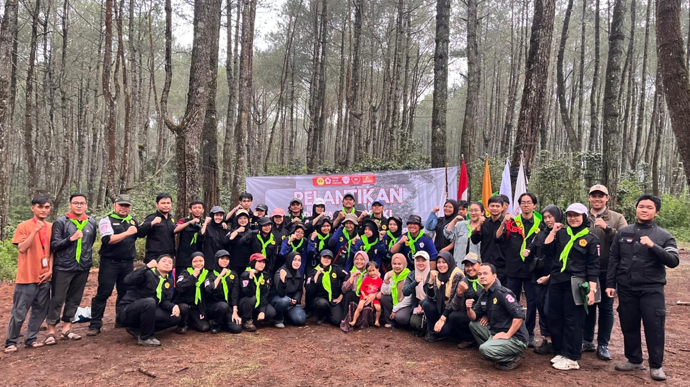

.png)
KSR PMI UNPAS
ditulis oleh Muhammad Rifqi Rajif. pada 6 November 2025.
Korps Sukarela Palang Merah Indonesia merupakan unit kegiatan yang bergerak dalam kepalangmerahan yang selaras dengan Tri Dharma Perguruan Tinggi. KSR PMI Unit Universitas Pasundan, satu kesatuan Organik dalam perhimpunan Palang Merah Indonesia yang merupakan wahana untuk membentuk insan akademis yang meiliki jiwa kemanusiaan di lingkungan Perguruan Tinggi.
Korps Sukarela Palang Merah Indonesia Unit Universitas Pasundan di bentuk atas dasar kesadaran dan kesukarelaan pribadi mahasiswa untuk menjadi anggota KSR PMI Unit UNPAS yang sesuai azas kepalangmerahan.

DIKLATSAR 31
Sejarah Berdirinya KSR PMI Unit Universitas Pasundan
Organisasi Korps Sukarela Palang Merah Indonesia (KSR PMI) Unit Universitas Pasundan pada awalnya bernama Keluarga Donor Darah (KDD), yang terbentuk dari sekelompok mahasiswa FKIP Unpas yang gemar mendonorkan sebagian darahnya di Palang Merah Cabang Kota Bandung.
KDD terbentuk tanggal 12 Desember 1988 yang diprakarsai oleh saudara Sudjadmoko (Mahasiswa Jurusan Biologi FKIP UNPAS Bandung). Keluarga Donor Darah FKIP UNPAS diwujudkan dalam satu kerjasama mahasiswa FKIP UNPAS dengan Palang Merah Indonesia Cabang Kota Bandung dengan surat keputusan No.03/5/kep/1989.
Pada tanggal 20 Oktober 1992 Keluarga Donor Darah FKIP UNPAS beralih status menjadi Keluarga Donor Darah UNPAS dan menjadi bagian dari unit kegiatan mahasiswa (UKM) Unpas, yang bergerak dalam kegiatan kemahasiswaan dengan SK. Rektor No.070.Unpas R/SK/0/X/92 atas permohonan KDD FKIP Unpas dan didukung oleh Senat Mahasiswa Unpas (SMUP) periode 1991 / 1992.
Seiring waktu dan tantangan yang dihadapi serta kemauan semua anggota baik pendiri maupyn anggota baru untuk menuju kemajuan, maka pada tahun 1995 terbentuk KSR PMI Unit Unpas yang merupakan peralihan dari Keluarga Donor Darah (KDD)'UNPAS Bandung yang dikukuhkan oleh SK,Rektor Unpas No.126/Unpas R/SK/0/IX/1995 dan SK Ketua PMI Cab,Kodya Bandung No.109/S/Kep/1995.
Tujuan
Tujuan penyelenggaraan KSR PMI Unit UNPAS adalah untuk :
- jasmani dan rohani, kepribadian yang mantap dan mandiri, semangat kebangsaan dan cinta tanah air, berbudi pekerti luhur serta tanggung jawab terhadap masyarakat dan kebangsaan.
- Menyiapkan mahasiswa agar menjadi sarjana yang sujana dan mandiri.
- Mentiapkan mahasiswa sebagai kader PMI.
- Ikut berperan secara aktif pada kegiatan-kegiatan kepalangmerahan didalam dan diluar perguruan tinggi.
Pokok-Pokok Kegiatan
- A. HUBUNGAN MASYARAKAT
- B. BIDANG PENDIDIKAN DAN LATIHAN
- Pelatihan jiwa kemanusiaan berdasarkan Pancasila dan azas yang terkandung dalam konvensi Jenewa.
- Pelaksanaan pelatihan dilakukan oleh anggota yang terlatih serta mengadakan kerjasama dengan lembaga/instansi lain, dengan materi disesuikan dengan Juklak PMI Pusat pelatih bekerjasama antara PMI Cabang Kota dan Kabupaten Bandung.
- Pelatihan Keterampilan
- C. BIDANG PENELITIAN DAN PENGEMBANGAN
- Orientasi Kader Kepemimpinan
- Pengkajian terhadap kegiatan baik yang telah dilaksanakan maupun yang akan dilaksanakan.
- D. BIDANG PENDIDIKAN DAN LATIHAN
- Donor Darah
- Bina Kesehatan Masyarakat
- Bantuan ke Bencana Alam dan Tenaga Sukarelawan.
- E. BIDANG SARANA DAN PRASARANA
- F. BIDANG P4GN (Pencegahan Pemberantasan Penyalahgunaan dan Peredaran Gelap Narkoba)
Berorientasi pada pengembangan dan penyebaran informasi KSR PMI Unit Unpas ke dunia Eksternal organisasi baik di lingkungan kampus maupun masyarakat non kampus .
Berorientasi pada pengembangan sumber daya manusia kedalam maupun keluar, yang mencakup :
Berorientasi pada kegiatan yang manfaatnya dapat dirasakan langsung oleh masyarakat kampus maupun masyarakat lain pada umumnya, seperti :
Berorientasi pada kegiatan yang mengkoordinir dan mengorganisir inventaris KSR PMI Unit Unpas dalam memberikan bantuan kepada masyarakat.
Berorientasi pada kegiatan pencegahan dan kegiatannya dalam bentuk penyuluhan, Seminar , diskusi dan Aksi Sosial.